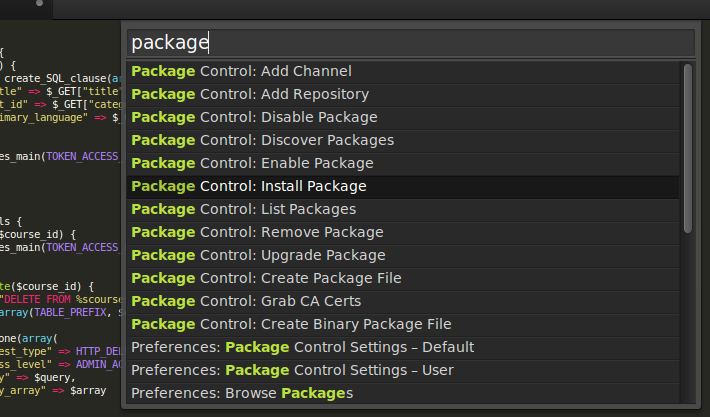
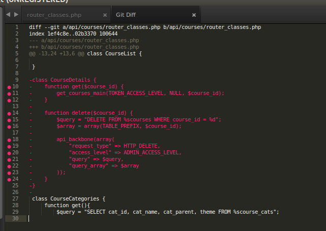
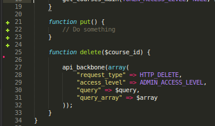
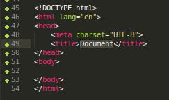
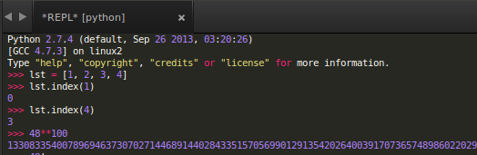
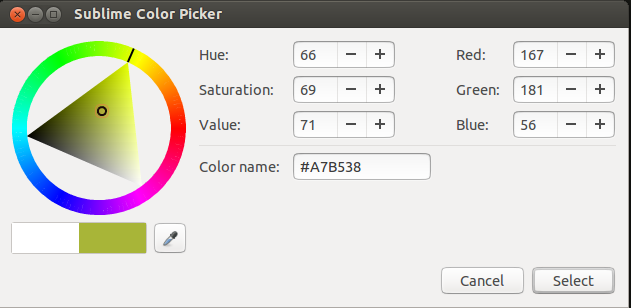
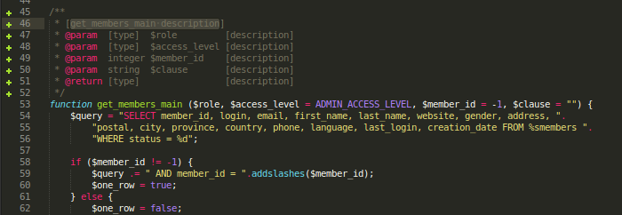
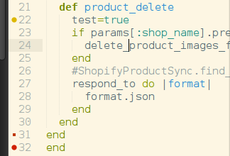

Useful
Plugins for Ruby Rails developer
- Package Control
- Git
- Git Gutter
- Emmet
- AllAutocomplete
- Terminal
- SublimeREPL
- ColorPicker
- MarkdownPreview
- DocBlockr
- Lints
- CodeFormatter
- Beautify Ruby
Package Control

Shortcut :
Ctrl/Cmd + Shift + p
-
https://sublime.wbond.net/installation

-
https://github.com/kemayo/sublime-text-git

-
https://github.com/jisaacks/GitGutter

- Lots of features
- html:5 and press Ctrl/Cmd + e
- default autocomplete considers words that are present in the current file only
-
AllAutocomplete plug-in, searches all open files to find matches while suggesting words
- Just in case you want to open a terminal in the directory of your current file, this plugin can be of use
-
Shortcut :
Ctrl/Cmd + Shift + t

- SublimeREPL lets you run an interpreter of a range of languages (NodeJS, Python, Ruby, Scala and Haskell to name a few) right inside Sublime Text
-
Shortcut :
Ctrl/Cmd + Shift + P
Type :
SublimeREPL:Ruby

-
Shortcut :
Ctrl/Cmd + Shift + c

- Just in case you want to open a terminal in the directory of your current file, this plugin can be of use
-
Shortcut :
Ctrl/Cmd + Shift + t
Inline lint highlighting for the Sublime Text

-
Javascript
https://github.com/SublimeLinter/SublimeLinter-jshint
-
Ruby
https://github.com/SublimeLinter/SublimeLinter-ruby
-
XML
https://github.com/SublimeLinter/SublimeLinter-xmllint
-
CSS
https://github.com/SublimeLinter/SublimeLinter-csslint
-
HAML
https://github.com/SublimeLinter/SublimeLinter-haml
Coffee Script
https://github.com/SublimeLinter/SublimeLinter-coffeelint
Erb html templates uses Paul Battley's htmlbeautifier gem. This (as well as rubygems) is assumed to be installed as seen by the ruby interpreter.
CodeFormatter has support for the following languages:
-
PHP - By PHP_Beautifier
-
JavaScript/JSON - By JSBeautifier
-
HTML - By JSBeautifier
CSS - By JSBeautifier
-
Python - By PythonTidy (only ST2)